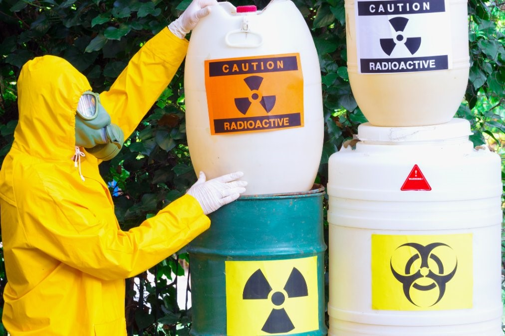

Protegemos tu empresa con soluciones integrales de seguridad ocupacional.
S&G Asesorías Ocupacionales ofrece servicios especializados en higiene y seguridad laboral. Nuestro compromiso es garantizar entornos de trabajo seguros y cumplir con normativas nacionales.
Expertos
Consultoría en seguridad ocupacional
Brindamos asesoría técnica y programas de formación práctica en temas de higiene, seguridad y gestión de productos químicos.
01
Emergencias
Respuesta

Planes de emergencia y respuesta ante incidentes químicos
Diseñamos planes estratégicos para la prevención, control y respuesta eficaz ante emergencias químicas, garantizando la seguridad del personal y la continuidad operativa.
02
Residuos
Gestión
Clasificación y gestión de residuos peligrosos conforme al Convenio de Basilea
Asesoramos en la identificación, segregación y manejo responsable de residuos peligrosos, alineados con normativas nacionales e internacionales para minimizar riesgos ambientales.
03
SGA
Implementación
Implementación del Sistema Globalmente Armonizado (SGA)
Brindamos apoyo en la adopción del SGA para el correcto etiquetado y comunicación de peligros químicos, fortaleciendo la cultura de seguridad en el lugar de trabajo.
04
Auditorías
Cumplimiento
Auditorías internas en seguridad e higiene ocupacional
Realizamos evaluaciones técnicas que permiten identificar oportunidades de mejora y asegurar el cumplimiento de las normas de seguridad e higiene en su organización.
Porque nosotros?
Protección que trasciende límites
Nuestra metodología integral aborda los riesgos laborales desde una perspectiva holística, garantizando la seguridad de cada trabajador como un compromiso fundamental.
Soluciones adaptadas a tu industria
Cada sector tiene desafíos únicos. Diseñamos estrategias personalizadas que se ajustan específicamente a las necesidades de tu organización, maximizando la eficacia preventiva.
Cultura de prevención sostenible
No solo implementamos normas, formamos equipos comprometidos con la seguridad. Desarrollamos programas que transforman la percepción de riesgo en cada nivel organizacional.
Transforma la seguridad de tu empresa ahora mismo
Contáctanos para una consultoría personalizada y descubre cómo podemos proteger a tu equipo
Contáctar